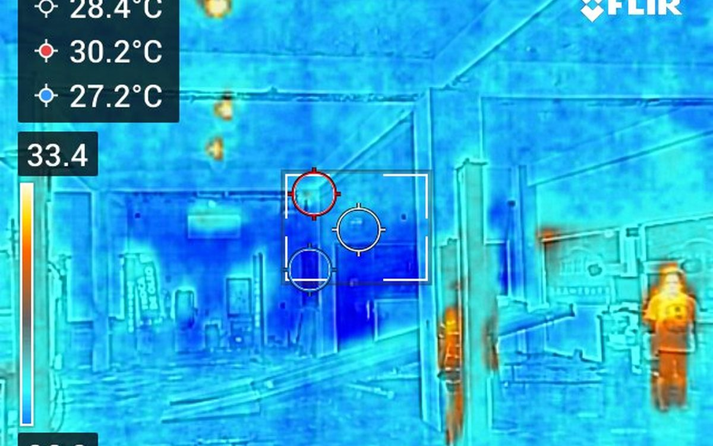
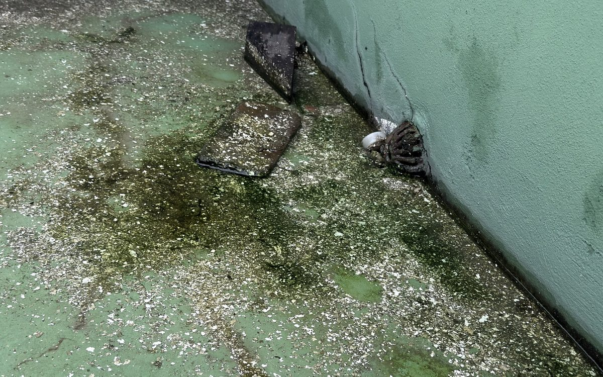
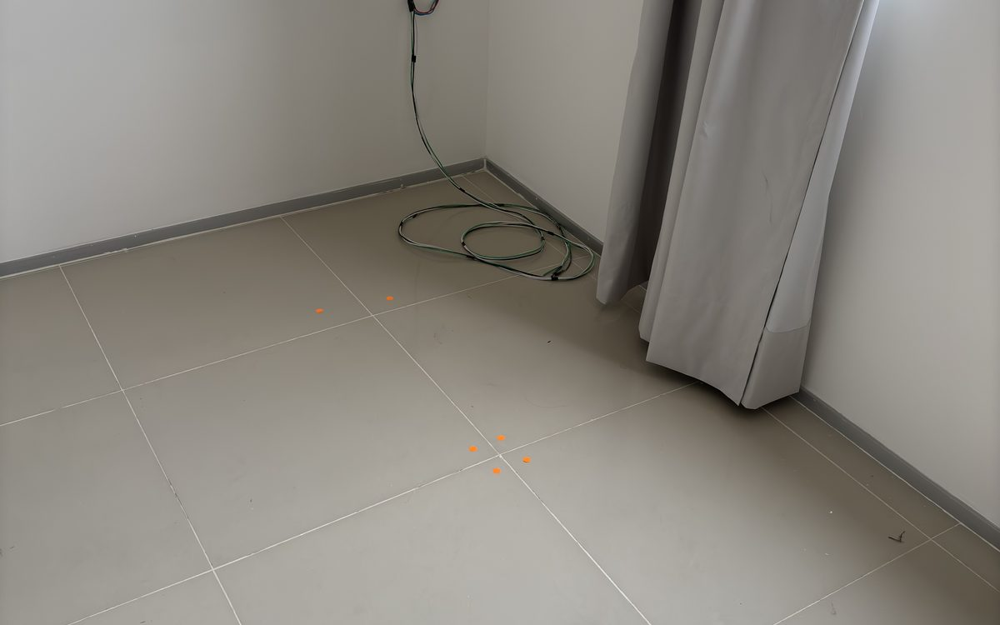

Avaliação de lajes, vigas, pilares e fundações em concreto armado e estruturas metálicas. Quando a estrutura está comprometida, projetamos a recuperação com critério.
Quando a inspeção predial detecta sinais de comprometimento estrutural — fissuras ativas, deslocamentos, oxidação avançada de armaduras, falhas em juntas — entra em cena a avaliação de integridade estrutural.
É um trabalho mais profundo, com instrumentação dedicada (esclerômetro, pacômetro, ensaio de carbonatação, monitoramento de fissuras) e análise da capacidade portante remanescente. O entregável vai além do laudo: quando necessário, elaboramos o projeto de reforço estrutural com dimensionamento, detalhamento e ART.
Atuamos em edificações comerciais de grande porte (galpões, oficinas, salões comerciais), apartamentos com necessidade de reforço estrutural e diagnósticos de patologias específicas em condomínios residenciais.
Entregáveis
Cada projeto entrega um conjunto técnico completo, dimensionado pela complexidade do caso.
Localização georreferenciada de cada anomalia identificada, com fotografia, dimensão e classificação de severidade.
Avaliação da capacidade da estrutura sob solicitação atual versus projeto original, identificando elementos sobrecarregados.
Quando necessário, projeto técnico com dimensionamento, detalhamento construtivo e especificações de materiais. Acompanhamento de execução opcional.
Cronograma de manutenção preventiva específico para a estrutura avaliada, integrável ao plano de manutenção predial.
Casos recentes


